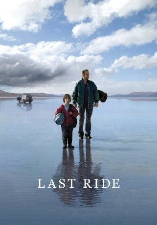

#9145 Violent Crime in Australia
Alternativ: Last Ride
 
 IMDB-Wertung: 6.7 / 10
IMDB-Wertung: 6.7 / 10  Metascore: 0
Metascore: 0 
Ein verzweifelter Vater flüchtet mit seinem 10jährigen Sohn Chook, nachdem er ein brutales Verbrechen begangen hat. Als die beiden in die Wüste und einer ungewissen Zukunft entgegen wandern, müssen sie nicht nur gegen die Elemente um ihr Überleben kämpfen, auch ihre Beziehung zueinander wird auf eine harte Probe gestellt. Irgendwann ist es an Chook, die Führung zu übernehmen. und eine schwere Entscheidung zu treffen, die das Leben der beiden grundlegend verändert.
Jahr: 2009
Dauer: 100 Minuten
FSK: 12
Land: Australien Studio: DTP EntertainmentTonspuren: DTS - ,
Untertitel:
Auflösung: 1080p (1920x1080) Größe: 5806 MB
Genre: Drama
Regisseur: Glendyn Ivin
Drehbuch: Benjamin Gourley
Soundtrack: Paul Charlier
Darsteller:
 Hugo Weaving als Kev
Hugo Weaving als Kev- Tom Russell als Chook
- Anita Hegh als Maryanne
 John Brumpton als Max
John Brumpton als Max- Sonya Suares als Zareena Khan
- Loren Taylor als Girl in Pub
- Adam Morgan als Man in Roadhouse
- Chris Weir als Local #2 in Pub
- Kelton Pell als Ranger Lyall
- Chrissie Page als Storekeeper
- Michael Allen als Local #1 in Pub
- Beau Hurren als Local #3 in Pub
- Mick Coulthard als Uncle Mick
- Lucy Russell als Girl in the Chicken Shop
- Jane Liscombe als News Reporter
- Mark Taylor als Police Sergeant
- Kate Portus als Mother on Bus
- Rachel Francis als Girl Feeding Crooks
- Lucas Mackay Smith als Boy on the Bus
- James Cavanaugh als Old Man in the Store
- Reg als Mr. Right
- John Riddell als Himself (archive footage) (uncredited)
Datei: X:\2009(N-Z)\Violent Crime in Australia (2009, FSK12, 1920x1080).mkv seit 19.07.2018
Festplatte: HD 2009(G-Z)-2010(A-F)
 Es gibt insgesamt 99 Filme in der Gruppe '2009(N-Z)'
Es gibt insgesamt 99 Filme in der Gruppe '2009(N-Z)'